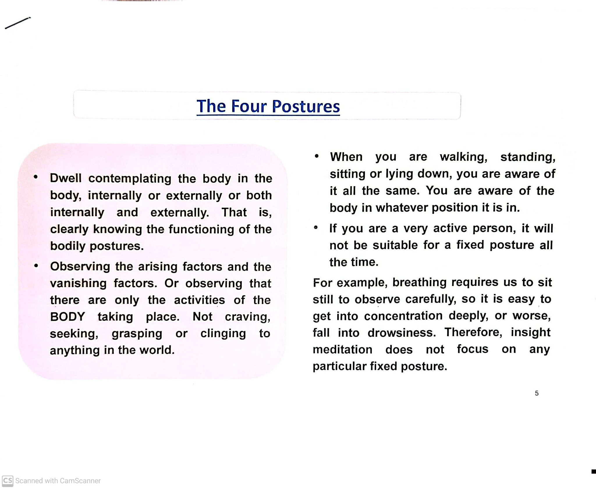
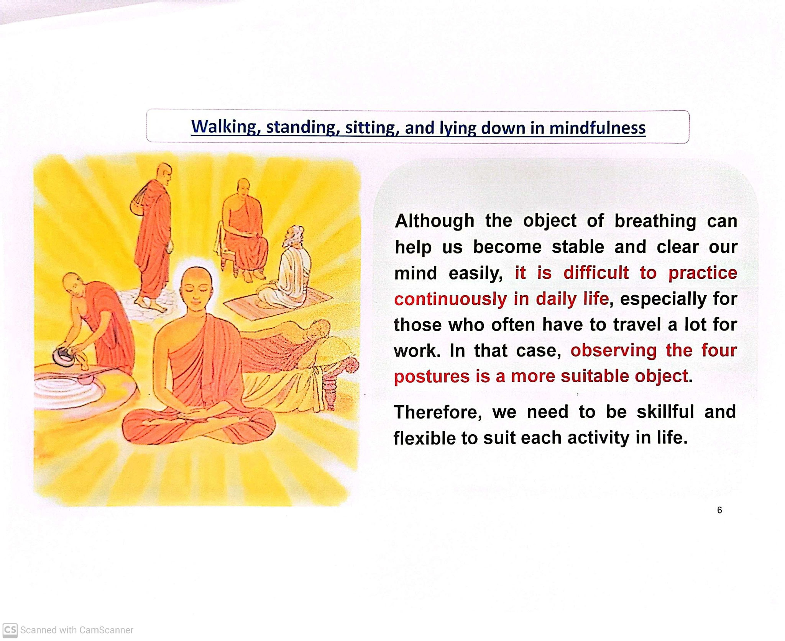
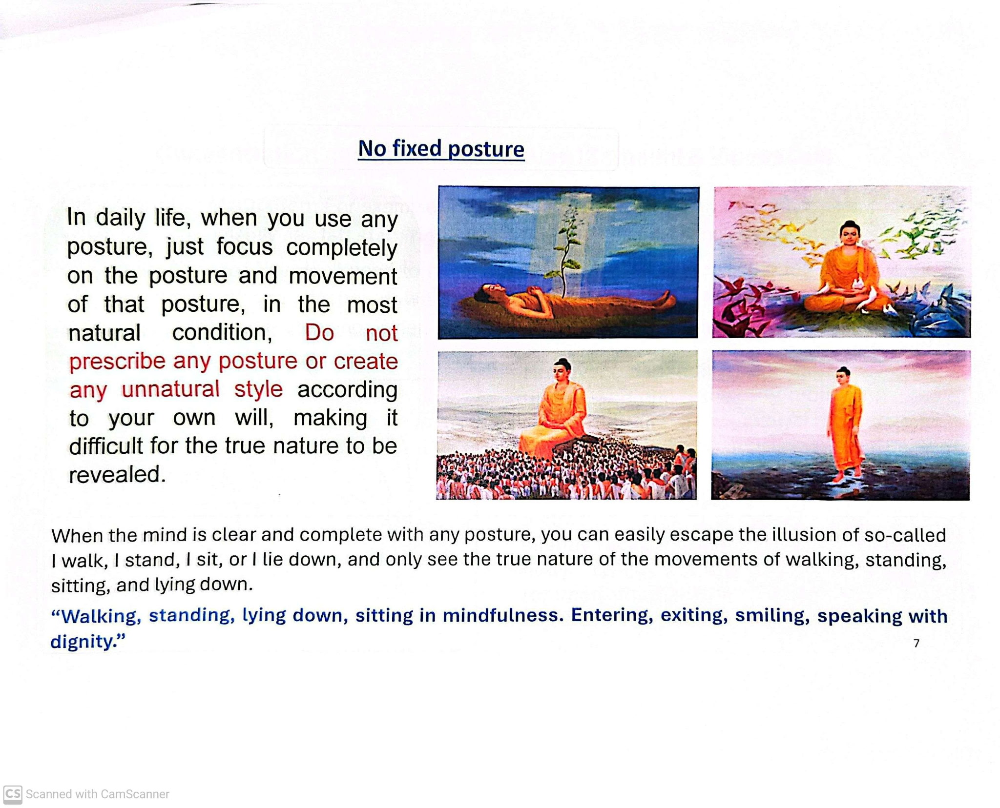
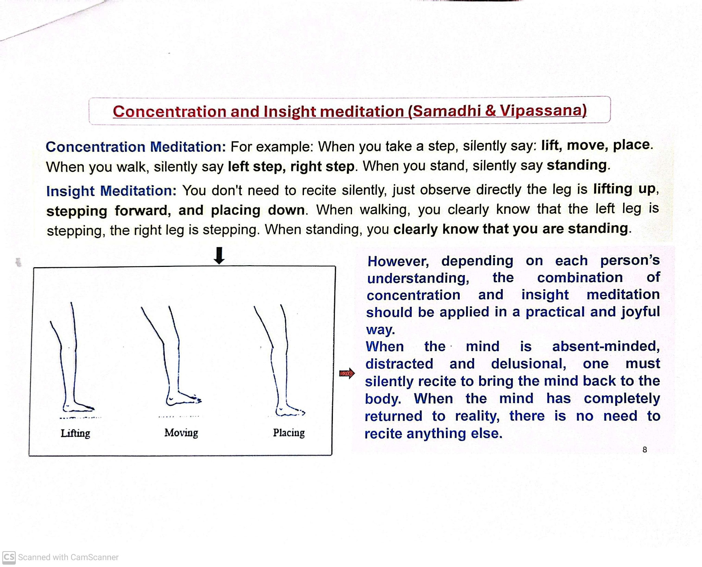

What this lesson is about
This lesson introduces mindfulness through the four postures: walking, standing, sitting, and lying down. The practice is to be aware of the body in whatever position it is in internally, externally, or both.
At a glance

- Clearly know the functioning of bodily postures.
- Observe arising factors and vanishing factors.
- See “only activities of the body” — without craving, grasping, or clinging.
Mindfulness in daily life

Mindfulness is not only something we practice in quiet moments. It is something we meet again and again in ordinary life.
Strangely, it is often easier to remain mindful among strangers— in public spaces, at work, or while moving through the world. There is alertness there, a natural attentiveness.
At home, with the people we love, mindfulness can fade more easily. Familiarity invites habit. Reactions arise quickly. Attention softens, and we drift.
This is not a failure. It simply shows us where practice truly lives.
Mindfulness learns to adapt to life as it is, not as we wish it to be. We meet each situation; ease or difficulty as part of the path.
No fixed posture

In daily life, the body is always moving or resting in some way. Walking, standing, sitting, lying down—each posture arrives on its own.
When a posture is present, simply know the movement of it. Let walking walk. Let sitting sit.
There is no need to adjust, improve, or watch too closely. Do not stiffen the body with effort, and do not tighten the mind with control.
Awareness stays with the movement, but does not interfere with it.
When posture and awareness meet naturally, the sense of “I am doing this” loosens on its own. Movement continues, without an owner.
When the mind is clear and complete with any posture, we can escape the illusion of “I walk, I stand, I sit, I lie down” and see the true nature of the movements of walking, standing, sitting, and lying down.
“Walking, standing, lying down, sitting in mindfulness. Entering, exiting, smiling, speaking with dignity.”
Concentration and insight meditation (Samadhi & Vipassana)

Concentration meditation
- When you take a step, silently say: lift, move, place.
- When you walk: left step, right step.
- When you stand: silently say standing.
Insight meditation
- No need to recite — observe directly: the leg is lifting, stepping, placing.
- When walking: clearly know left leg stepping, right leg stepping.
- When standing: clearly know that you are standing.
How to combine them
Depending on each person’s understanding, the combination of concentration and insight should be applied in a practical and joyful way.
When the mind is absent-minded, distracted, or delusional, silently recite to bring the mind back to the body. When the mind has returned to reality, there is no need to recite anything else.
Put it into practice
- Choose a posture you’re already in (walking, standing, sitting, or lying down).
- Gently note: “walking” / “standing” / “sitting” / “lying down”.
- Feel the body and its movement in a natural way (no forcing).
- Notice arising and disappearing (movement begins, changes, ends).